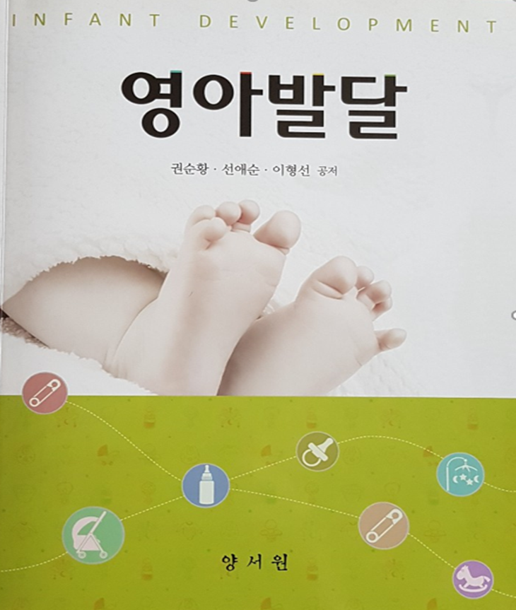
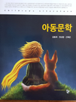
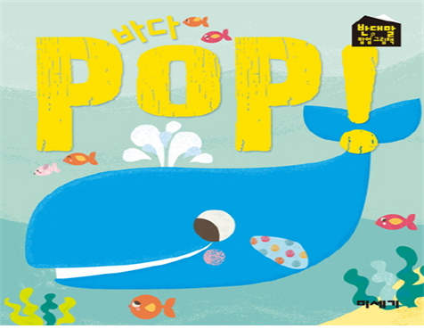
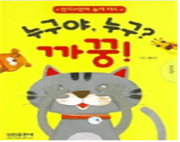

걸음마기 언어발달의 특징
인간은 태어나면서 울음으로 시작하여 옹알이를 표현하면서 소통을 가지기 시작한다. 보통 영아가 12개월이 되면 점차 알아들을 수 있는 의미있는 단어를 사용하기 시작하지만 표정, 몸짓, 손짓 등 비언어적인 표현을 통하여 의사소통을 한다.
영아의 언어발달은 개인차가 나타나지만, 대부분의 영아는 동일한 발달단계를 거친다. 일반적으로 이 시기는 성인의 특별한 도움이 없어도 일상생활 속에서 의사소통을 위한 행동들을 자연스럽게 습득하며, 시간이 지남에 따라서 점점 사회적 상호작용 언어를 익혀간다.

언어발달과정은 다음과 같다.
생후 3개월 사이에 울음 등으로 사회적 의사소통이 이루어진다.
4~5개월이 되면 주위 사람들을 쳐다보거나 소리내기, 만지기 등을 나타낸다.
6개월이 되면 사회적 미소 단계로서 긍정적인 표현으로 소리 및 미소를 짓는다.
7~8개월이 되면 혼자 앉기, 기어가기 등으로 이동이 가능해짐에 따라 주변 사람들을 따라 다니거나 손을 뻗는다.
9~12개월이 되면 상호작용이 촉진되는 다양한 소리를 나타내면서 주변 사람의 반응을 간략한 단어 사용이 증가시킨다.
걸음마기 언어발달을 위한 그림책의 의의
걸음마기의 언어는 자신의 생각이나 느낌을 본능적으로 전달하고 메시지를 이해하는 것을 일차적 목표로 한다. 12개월 이후 언어기(linguistic period)는 실제적으로 사용되는 어휘의 습득과 조합이 빠르게 통합하여 표현하게 된다.

첫돌 무렵에 한 단어 사물의 이름을 말할 수 있고 의성어가 있는 음률 노래를 들으면 흉내내거나 일부분을 따라한다. 24개월 무렵에는 두 개 이상의 단어를 연결시켜 자기중심적인 언어로 사용한다. 이 시기는 명사와, 감탄사, 부사, 동사 등을 사용하고, 단순한 개념 및 정보를 획득한다.
Vygotsky는 걸음마기는 자기 자신에게 혼잣말(self–talk)을 하게 되며 스스로 언어의 상징적 기능을 발견하였다. 부모와 교사, 또래의 조력(scaffolding)에 의해 근접발달지대(zone of proximal development, ZPD)에 이르게 되면 사고가 언어의 도움을 받아 문제를 해결하게 된다고 하였다(조성연 외, 2017).
걸음마기는 단어를 인식하는 속도가 빨라져 1주일에 10개 이상의 단어를 흡수하고 사회적 상호작용의 결과 2세 전후로 250~300개 이상의 단어를 사용할 수 있는 언어의 폭발적 팽창기를 나타낸다. 울음과 옹알이를 하던 아기가 한 단어, 두 단어 말을 습득한 이후 사물의 이름을 말하거나 흉내내기 등 의성어나 의태어 사용을 즐긴다.
특히, 언어를 사용하게 되면 자신의 생각과 주변을 통제할 수 있는 문제해결, 기억, 사고, 추리 등 인간의 고등정신 능력에 중요한 요인으로 자신의 행동과 감정을 조절하는 데에 언어를 사용할 수 있게 된다.
걸음마기의 언어발달에 적합한 그림책 예를 들면, ‘바다 POP!’은 반대말을 팝엎으로 구성하여 흥미롭게 하였고. ‘누구야 누구 까꿍’은 개와 고양이를 포함한 동물의 이름과 생김새, 그리고 의성어와 의태어의 반복되는 요소가 있는 운율이나 리듬을 즐겁게 따라 익힐 수 있도록 구성된 카드 형식으로 인지력과 집중력 등을 향상시켜 주는 작품이다.


출처
권순황, 선애순,이형선(2015), 영아발달. 양서원
김동례, 권순황, 선애순(2018). 아동문학. 공동체.
2022.04.29 - [분류 전체보기] - 아기의 옹알이는 최초의 말소리-음소확장, 음소축소
아기의 옹알이는 최초의 말소리-음소확장, 음소축소
아기의 최초 의사소통 수단 옹알이(babbling)는 전 세계적으로 동일하며, 아기의 최초 의사소통 수단의 말소리이다. 옹알이는 아기의 신체적 성숙으로 인해 나타나는 목, 혀, 입술을 움직여서 내는
think-sis.co.kr